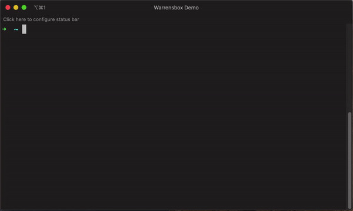

Command line
Use dropdown menu to select version

- You can switch between different versions of terraform by typing the command
tfswitchon your terminal. - Select the version of terraform you require by using the up and down arrow.
- Hit Enter to select the desired version.
The most recently selected versions are presented at the top of the dropdown.
Supply version on command line

- You can also supply the desired version as an argument on the command line.
- For example,
tfswitch 0.10.5for version 0.10.5.
See all versions including beta, alpha and release candidates(rc)

- Display all versions including beta, alpha and release candidates(rc).
- For example,
tfswitch -lortfswitch --list-allto see all versions. - Hit Enter to select the desired version.
Install latest version only
- Install the latest stable version only.
- Run
tfswitch -uortfswitch --latest
Install latest implicit version for stable releases
- Install the latest implicit stable version.
- Ex:
tfswitch -s 0.13ortfswitch --latest-stable 0.13downloads latest on0.*branch (~> 0.13), whiletfswitch -s 0.13.5ortfswitch --latest-stable 0.13.5downloads latest on0.13.*branch (~> 0.13.5) andtfswitch -s 0ortfswitch --latest-stable 0downloads latest on0branch (~> 0).
Install latest implicit version for beta, alpha and release candidates(rc)
- Install the latest implicit version, including prereleases versions.
- Ex:
tfswitch -p 0.13ortfswitch --latest-pre 0.13downloads 0.13.0-rc1 (latest) version. - See examples for
--latest-stableoption above.
Show latest version only
- Just show what the latest version is.
- Run
tfswitch -Uortfswitch --show-latest
Show latest implicit version for stable releases
- Show the latest implicit stable version.
- Ex:
tfswitch -S 0.13ortfswitch --show-latest-stable 0.13shows latest on0.*branch (~> 0.13), whiletfswitch -S 0.13.5ortfswitch --show-latest-stable 0.13.5shows latest on0.13.*branch (~> 0.13.5).
Show latest implicit version for beta, alpha and release candidates(rc)
- Show the latest implicit version, including prereleases versions.
- Ex:
tfswitch -P 0.13ortfswitch --show-latest-pre 0.13
Show required (or explicitly requested) version
- Show the version required by version constraints.
- Takes into account version from module version constraint, command line, configuration file(s), env var, etc. See General for options.
- Defaults to latest version if no constraints found.
- Ex:
tfswitch -Rortfswitch --show-required - Can be combined with options like
--latest-stableand--latest-preto show the required version that would be installed by those options.
Use custom mirror
To install from a remote mirror other than the default
(https://releases.hashicorp.com/terraform). Use the -m or --mirror
parameter.
tfswitch --mirror https://example.jfrog.io/artifactory/hashicorp
Install to non-default location
By default tfswitch will download the Terraform binary to the user home
directory under this path: $HOME/.terraform.versions
If you want to install the binaries outside of the home directory then you can
provide the -i or --install to install Terraform binaries to a non-standard
path. Useful if you want to install versions of Terraform that can be shared
with multiple users.
The Terraform binaries will then be placed in the directory
.terraform.versions under the custom install path e.g.
/opt/terraform/.terraform.versions
tfswitch -i /opt/terraform
NOTE: The directory passed in -i/--install must be created before
running tfswitch
Install binary for CPU architecture that doesn't match the host
By default tfswitch will download the binary for the CPU architecture of the
host machine.
If you want to download the binary for CPU architecture that doesn't match the
host then you can provide the -A or --arch command line argument to
download binaries for custom CPU architecture. Useful if you need to override
binary architecture for whatever reason.
tfswitch --arch amd64
NOTE: If the target file already exists in the download directory (See
Install to non-default location section
above), it will be not downloaded. Downloaded files are stored without the
architecture in the filename. Format of the filenames in download directory:
<product>_<version>. E.g. terraform_1.10.4.
Disable color output / Force color output
tfswitch defaults to color output if the terminal supports it and if the TTY
is allocated (interactive session).
Disabling color output can be useful in non-interactive sessions, such as when running scripts in CI/CD pipeline or when piping output to other commands.
- If you want to disable color output, you can use the
--no-color(-k) flag. - If you want to force color output even if the TTY is not allocated
(non-interactive session), you can use the
--force-color(-K) flag.
NOTE: --no-color and --force-color flags are mutually exclusive.
Check if a specific Product version matches a version requirement
tfswitch can be used to match a specific Product version against a version
mandated by the configuration (version provided on command line as argument to
tfswitch, TF_VERSION environment variable, root module version constraint,
other supported configuration options — see General for available
options).
- If the version matches the requirement,
tfswitchwill exit with a status code of0with correspondingINFOlevel log message. - If the version does not match the requirement, it will exit with a status code of
2with correspondingERRORlevel log message. - If there is an error (e.g. invalid version format), it will exit with a
status code of
1with correspondingERRORandFATALlevel log messages. - If no version requirement is found, it will assume the provided version suffices and
exit with status code of
0with correspondingWARNlevel log message.
tfswitch --chdir=/tmp/test/ --match-version-requirement=1.10.5; echo $?
20:41:00.226 INFO Reading version constraint from Terraform module at "../../../../tmp/test"
20:41:00.227 INFO Matched version: "1.10.5"
20:41:00.227 INFO Version "1.10.5" matches requirement "~> 1.10.5, < 1.12.0"
0
tfswitch --chdir=/tmp/test/ --match-version-requirement=1.10.1; echo $?
20:41:17.483 INFO Reading version constraint from Terraform module at "../../../../tmp/test"
20:41:17.484 ERROR Version "1.10.1" mismatches requirement "~> 1.10.5, < 1.12.0"
2
tfswitch --chdir=/tmp/test/ --match-version-requirement=string; echo $?
20:41:39.199 INFO Reading version constraint from Terraform module at "../../../../tmp/test"
20:41:39.199 ERROR Failed to validate version format: "string"
20:41:39.199 ERROR Version does not exist or invalid terraform version format.
Format should be #.#.# or #.#.#-@# where # are numbers and @ are word characters.
For example, 1.11.7 and 0.11.9-beta1 are valid versions
1
tfswitch --match-version-requirement=1.10.5; echo $?
20:41:52.372 WARNING No version requirement found to match against (version "1.10.5" is acceptable)
0